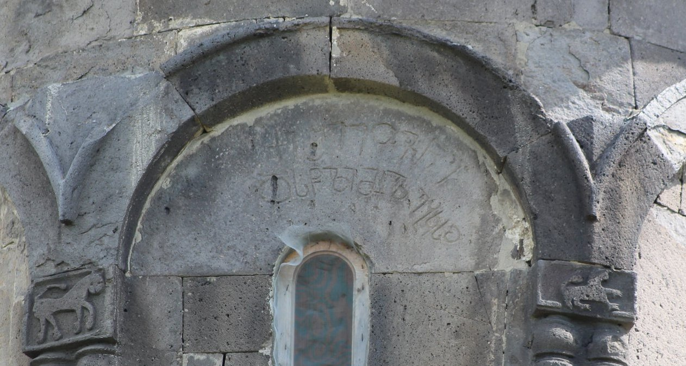

ზემო ნიქოზის მთავარანგელოზის ტაძრის მოსახსენებელი მიქაელ ეპისკოპოსის დისწულისაArchangel Church of Zemo Nikozi, memorial inscription by Bishop Michael’s nephew
ზემო ნიქოზის მთავარანგელოზის ტაძრის მოსახსენებელი მიქაელ ეპისკოპოსის დისწულისა
Archangel Church of Zemo Nikozi, memorial inscription by Bishop Michael’s nephew
შინაარსი / Summary
მოსახსენებელი Memorial
ბიბლიოგრაფია Bibliography
კრიტიკული გამოცემა Interpretive Edition
"ქე შე იოვნე დსწლი მქლ ებკზჲ"
ქ(რისტ)ე შ(ეიწყალ)ე იოვ(ა)ნე
დ(ი)სწ(უ)ლი მ(ი)ლ(აე) ებ(ის)კ(ოპო)ზ(ისა)ჲ
დიპლომატიური გამოცემა Diplomatic Edition
"ႵႤ ႸႤ ႨႭႥႬႤ ႣႱႼႪႨ ႫႵႪ ႤႡႩႦჂ"
ႵႤ ႸႤ ႨႭႥႬႤ
ႣႱႼႪႨ ႫႪ ႤႡႩႦჂ

ზემო ნიქოზის მთავარანგელოზის ტაძრის მოსახსენებელი მიქაელ ეპისკოპოსის დისწულისა
{'default': 'ქრისტე, შეიწყალე იოვანე, დისწული მიქაელ ეპისკოპოსისა. Christ, have mercy on John, nephew of Bishop Michael.'}
{'default': 'ნოდარ შოშიაშვილის ქართული წარწერების კორპუსის მიხედვით #94. წარწერას განკვეთილობის ნიშნები არ ახლავს. სიტყვები ერთმანეთისგან არ არის დაცილებული.\n წარწერის დათარიღების პალეოგრაფიული საფუძველია გრაფემების მოყვანილობა: გრაფემა Ⴊ-ს წრე ზოგჯერ ძალიან დიდია და მოკლე ყელი უერთდება წრეს შუა ადგილზე;\n გრაფემა Ⴢ-ს ზედა კიდე მარცხნივაა ძლიერ გაზიდული და დიდად სცილდება ქვედა კიდეს; Ⴌ-ს გამხედრულება;\n გრაფემების ჩამოგრძელება, მიდრეკილება ოთხხაზოვანი ბადისაკენ. სიტყვების გადაბმა, განკვეთილობის გარეშე წერა. ეკლესიის ხუროთმოძღვრული ნიშნები და ჩუქურთმები. According to the Corpus of Georgian Inscriptions by Nodar Shoshiashvili the inscription #94. The inscription does not contain any mark of separation. No spaces between the words. Dating the inscription according to the paleographic data, the shape of the graphemes: grapheme Ⴊ sometimes has quite a big circle and a short neck joins the circle in the middle. the upper left edge of the grapheme Ⴢ is leaned and departs from the lower edge greatly; Letter Ⴌ is represented with Mkhedruli alphabet;\n tendency of lengthen the letters; adjusting to fit the four line format. Words follow each other without leaving out the space. Ornaments and carvings of the church.'}
<div type="edition" xml:lang="ka" ana="mtavruli" xml:space="preserve">
<ab>
<lb n="1"/><w lemma="ქრისტე"><expan><abbr>ქ</abbr><ex>რისტ</ex><abbr>ე</abbr></expan></w>
<w lemma="განსუენება"><expan><abbr>გა</abbr><ex>ნ</ex><abbr>ო</abbr><ex>ჳ</ex><abbr>ს</abbr><ex>უ</ex><abbr>ენე</abbr></expan></w>
<w lemma="სულ">სოჳ<lb n="2" break="no"/>ლსა</w>
<name nymRef="ვაჩა">ვაჩაჲს<lb n="3" break="no"/>ასა</name>
<name nymRef="გურა"><expan><abbr>გო</abbr><ex>ჳ</ex><abbr>რაჲ<lb n="4" break="no"/>სასა</abbr></expan></name>
<name nymRef="მირა"><expan><abbr>მ</abbr><ex>ი</ex><abbr>რა</abbr><ex>ჲ</ex><abbr>ს</abbr><ex>ა</ex><abbr>ს</abbr><ex>ა</ex></expan></name>
</ab>
</div>